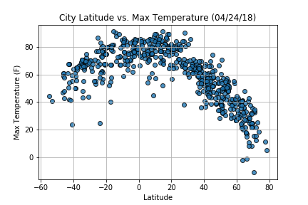
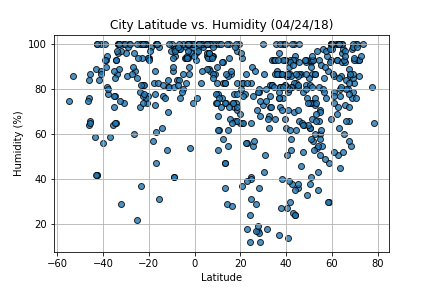
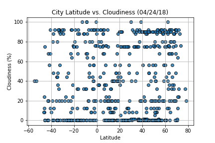
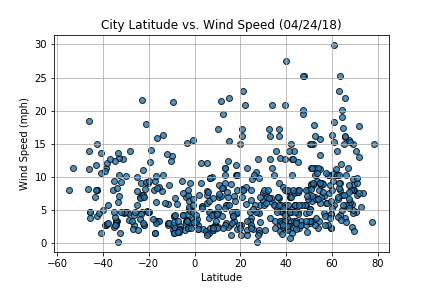

<!DOCTYPE html>
<html lang="en">
<head>
    <meta charset="UTF-8">
    <title>Latitude Analysis</title>
    <meta http-equiv="X-UA-Compatible" content="IE=edge">
    <meta name="viewport" content="width=device-width, initial-scale=1"
    <!-- Bootstrap core CSS的css樣式 -->
    <link href="css/bootstrap.min.css" rel="stylesheet"/>
    <!-- 自訂的css樣式 -->
    <link href="css/custom.css" rel="stylesheet">

    <!-- jQuery函式庫 -->
    <script src="https://ajax.googleapis.com/ajax/libs/jquery/1.11.3/jquery.min.js"></script>
    <!-- Bootstrap的js函式庫 -->
    <script src="js/bootstrap.min.js"></script>
    <!-- 自訂的js程式碼檔案 -->
    <script src="js/custom.js"></script>
    <!-- from w3schools bootstrap nav -->
    <link rel="stylesheet" href="https://maxcdn.bootstrapcdn.com/bootstrap/4.1.0/css/bootstrap.min.css">
    <script src="https://ajax.googleapis.com/ajax/libs/jquery/3.3.1/jquery.min.js"></script>
    <script src="https://cdnjs.cloudflare.com/ajax/libs/popper.js/1.14.0/umd/popper.min.js"></script>
    <script src="https://maxcdn.bootstrapcdn.com/bootstrap/4.1.0/js/bootstrap.min.js"></script>
</head>


<body>
<body style="background-color: lightblue">


</body>
</html>

    </head>
    <body>
        
        <h1>Latitude Analysis with Attitude</h1>
        
        <br/>
        <!--
            MADE WITH <3 AND JAVASCRIPT
        -->
        
        <p>
            In this analysis, you'll be experinceing the visualization for the weather of 500+ cities across the world of varying distance from the equator. The main objective is to build a series of scatter plots to showcase the following relationships:

        </p>
        
        <div class="container">
  
  <p>Temperature (F) vs. Latitude</p>
  <p>Humidity (%) vs. Latitude</p>
  <p>Cloudiness (%) vs. Latitude</p> 
  <p>Wind Speed (mph) vs. Latitude</p>    


    


<em></em>
<em></em>
<em></em>
        <!<br/>
        <br/>
        
        
        <!--
            GET STARTED WITH YOUR OWN FILES
        -->
        
        <h2>Projects Design: <br/>
            Randomly select **at least** 500 unique (non-repeat) cities based on latitude and longitude to perform a weather check on each of cities.  </h2>
        <p>
            In order for travers to answer a fundamental question: "What's the weather like as we approach the equator?"

            Now, we know what you may be thinking: "Duh. It gets hotter..."  <br/>

            But, if pressed, how would you prove it? <br/>

        </p>


        <h2>This is your analysis! Read on! </h2>

    
<body>
    <div class="container-fluid">
        <nav class="navbar navbar-inverse">
            <div class="container-fluid">
                <div class="navbar-header">
                    <a class="navbar-brand" href="./landing.html"><span class="latitude">Latitude</a>
                    <button class="navbar-toggler" type="button" data-toggle="collapse" data-target="#navbarNavDropdown" aria-controls=" navbarNavDropdown" aria-expanded="false" aria-label="Toggle navigation">
                    <span class="navbar-toggler-icon"></span>
                    </button>
                </div>
                <ul class="nav navbar-nav navbar-right">
                    <li>
                        <div class="dropdown">
                            <button class="btn btn-primary dropdown-toggle" type="button" data-toggle="dropdown">What is Analysis?
                            <span class="caret"></span></button> 
                            <ul class="dropdown-menu">
                                <li><a href="./visualization-image-1.html">Latitude vs. Max Temperature</a></li>
                                <li><a href="./visualization-image-2.html">Latitude vs. Humidity</a></li>
                                <li><a href="./visualization-image-3.html">Latitude vs. Cloudiness</a></li>
                                <li><a href="./visualization-image-4.html">Latitude vs. Wind Speed</a></li>
                            </ul>
                        </div>
                    </li>
                    <li>
                    
                    </li>
                    <li>
                        
                    </li>
                </ul>
            </div>
        </nav>
        
        <div class="content">
            <div class="container-fluid">
                <div class="row">
                    <div class="col-sm-12 col-md-8">
                        <div class="box">
                            <div class="page-header">
                                <h1 class="title">Summary: Latitude vs. X</h1>
                            </div>
                            <div class="box">
                                
                                <p class="category"> The purpose of this project was to analyze how weather changes as you get closer to the equater. To accomplish this analysis. we first pulled data from the OpenWeatherMapAPI to assemble a dataset on over 500 cities.
                                </p>
                                <p class="category">After assembling the dataset, we used Matplotlib to plot various aspects of the weather vs. latitude. Factors we looked at included:temperature, cloudiness, windspeed, and humidity. This site provides the source data and visualizations created as part of the analysis,as well as explanations and descriptions of any trends and correlations witnessed.
                                </p>
                            </div>
                        </div>
                    </div>

                    <div class="col-sm-12 col-md-4">
                        <div class="box">
                            <div class="page-header">
                                <h1 class="title">Visualizations</h1>
                            </div>
                            <div class="box">
                               <a href="./visualization-image-1.html"></a>
                               <a href="./visualization-image-2.html"></a>
                               <a href="./visualization-image-3.html"></a>
                               <a href="./visualization-image-4.html"></a>
                            </div>
                        </div>
                    </div>
                </div>
            </div>
        </div>
    </div>
</body>
        <!--   Core JS Files   -->
    <script src="assets/js/jquery.3.2.1.min.js" type="text/javascript"></script>
    <script src="assets/js/bootstrap.min.js" type="text/javascript"></script>

    <!--  Charts Plugin -->
    <script src="assets/js/chartist.min.js"></script>

    <!--  Notifications Plugin    -->
    <script src="assets/js/bootstrap-notify.js"></script>

    <!--  Google Maps Plugin    -->
    <script type="text/javascript" src="https://maps.googleapis.com/maps/api/js?key=YOUR_KEY_HERE"></script>

</html>
   
          
©

        
        <samp>
            
        </samp>
        

        </body>

        </html>

